Chapter 3 My Experiments
Microbe numbers shift daily in response to your environment, so a single sample won’t give much more than a brief snapshot at a single point in time. To understand the results of a given test, you’ll want to compare it to other samples, either from yourself at a different point in time, or to other people. This chapter will show how I did that.
How Kefir changes the microbiome
Experiment 4: The Dentist What changes before and after my dental checkup?
Experiment 5: Gut Cleanse Let’s go all the way: clear out all the microbes and watch how they grow back.
3.1 Overall Summary of My Experiments
Before we get into specific experiments, let’s look at the overall picture from more than a year’s worth of near-daily samples. Can we confirm or disprove any common ideas about the microbiome?
3.1.1 Variability through time
Which are the most common gut taxa? Let’s look first at Phylum level
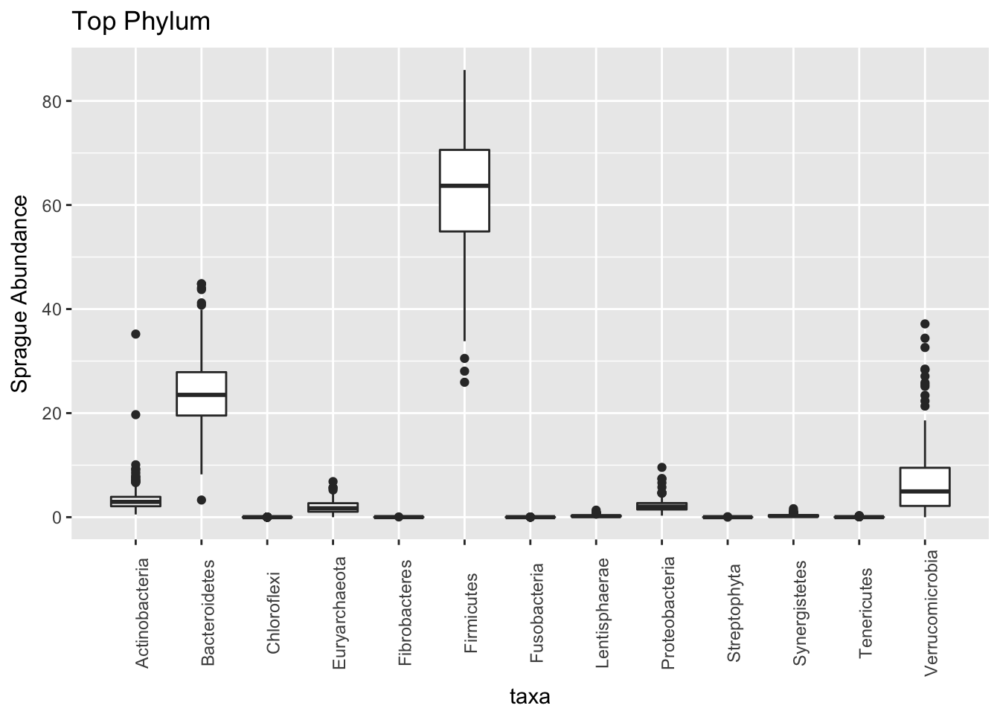
In these boxplot charts, the long box in the middle represents a range between 25 and 75 percentile. The line in the middle of the box is the median, and the other samples are shown as dots outside the middle 50%.
Like most westerners, the vast majority of my gut is composed of Firmicutes and Bacteroidetes, with an occasional spike of Actinobacteria or Proteobacteria or Verrucomicrobia.
The Genus level reflects this with more detail, and variability:
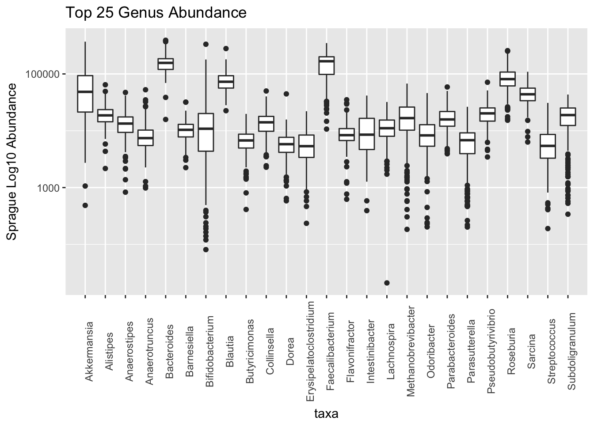
3.1.2 Firmicutes and obesity
We mentioned Firmicutes earlier. Let’s dig more deeply to see how those results look on myself.
Let’s test that overall ratio of Firmicutes/Bacteroidetes, which is based on a paper published in 200x.
The most recent, well-respected review (Walters, Xu, Knight 2014) says flat-out:
the ratio changes between normal and obese individuals are not statistically significant overall and therefore should not be considered a general feature distinguishing normal and obese human gut microbiota across populations.
And sure enough, this is what it looks like for me:
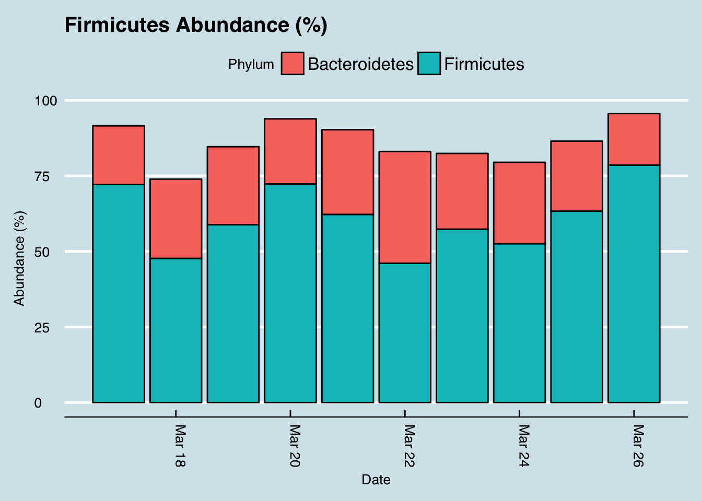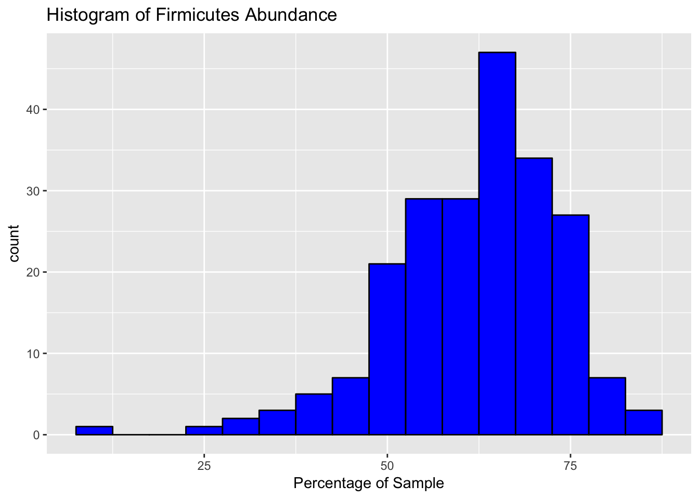
3.1.3 Diversity
The general consensus is that diversity is good: a greater variety of microbes ensures more resillience against the daily threat of invaders. Many people, after taking just one test, often feel either reassured that their diversity is “good” or disappointed that it’s “bad”. But I find that day-to-day variability is great enough that it’s almost never useful to use a single result. For exmaple, here’s my Simpson diversity during a typical week:
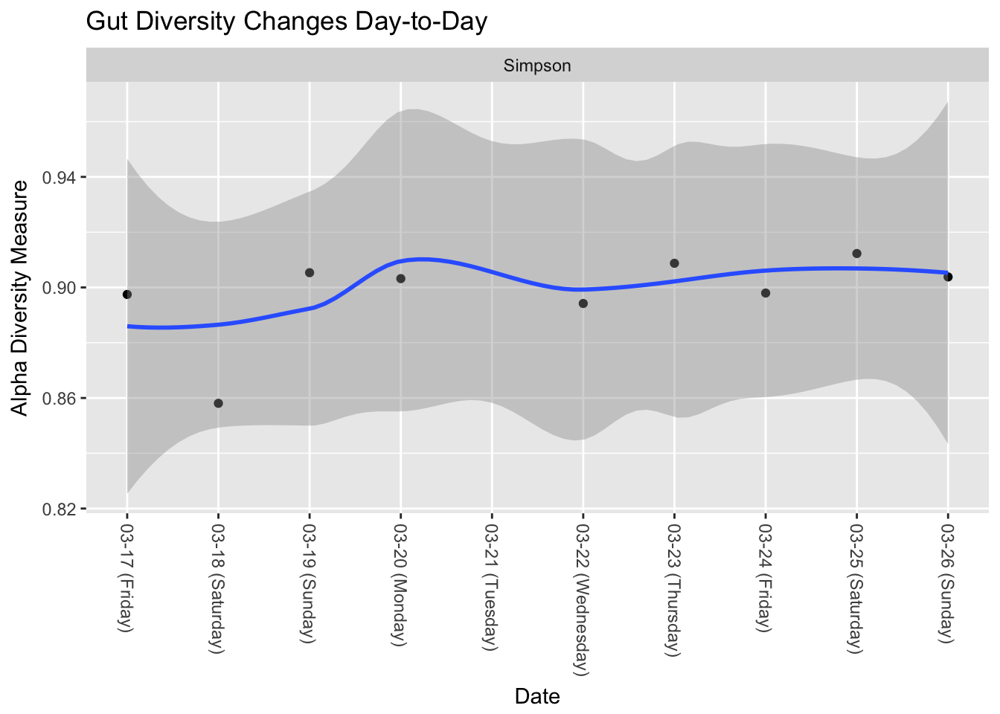
If I had only tested on Saturday, I may have been disappointed with my 0.86 score. Wait another day or two and, with no significant changes in diet, I was up to 0.92. Moral: don’t take a single result too seriously.
To get a sense of how much diversity can vary over a year:
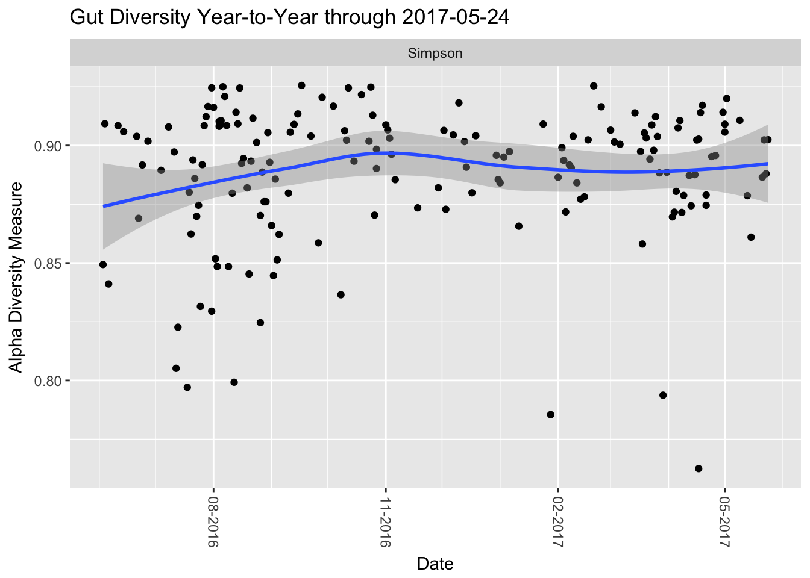
Although the blue moving-average line shows apparent stability, there are many days that are far above and below the average.
3.2 Kefir and the Microbiome
If you follow the microbiome at all, you’ll eventually discover the benefits of kefir. Google the phrase “one of the most potent probiotic foods available” and you’ll find kefir in all the top results. A recent BBC documentary that tested people after consuming different types of “gut-friendly” foods found that kefir had by far the biggest effect. My interest piqued when, after my disappointment with kombucha, I spoke with a man who happened to mention his good luck with kefir as a solution to his many gut issues. On a doctor’s recommendation, he tried kefir for a number of years with limited success, until — frustrated with the $3/day expense of buying it at Trader Joe’s — he began making it himself at home. “What a difference!” he claimed.
Did it work for me? Yes! I found a very noticeable change in my gut microbiome — the most significant I’ve seen among my many experiments. Look at my levels of Lactococcus, the main genus of microbe known to be found in kefir:

The blue dots in the chart are days when I drank kefir. Since I sample near-daily over the entire chart, we can see that both of these taxa suddenly appeared shortly after I began to consume kefir. I had almost none beforehand. Also note that the levels seem to dip when I go for a few days without drinking any, such as during my business trips out of town in mid-March and another in early-April.
So it apparently has a big effect on the microbiome. What is this stuff anyway?
The first thing to know about kefir is the pronunciation. Say “Keh-FEAR”, with the accent on the second syllable, not “KEE-fur” or “kEH-fir”. The Russian origin of the term is a reminder of a time in the distant past when — it’s unclear exactly where or how — the first batch was prepared and then passed along, its microbial components shared from person to person until it reached today’s status as a popular drink you can buy in most grocery stores.
Making it at home brings more benefits than just saving money. Commercially-purchased drinks are subject to unavoidable regulatory, shelf-life, and consistency contraints that are important for business. But more than that, if you believe like I do that microbes are highly-customized to our environments, making at home will ensure that the kefir is well-adapted to your own personal microbial environment. The batch that survives and thrives in your kitchen will, by definition, have proven its ability to withstand whatever whatever conditions you face there.
Making it yourself is surprisingly easy. It begins with a bundle of the component microbes, a cauliflower-shaped substance usually called the “grain” or “seed” that looks like this:
Instruction books often tell you to be careful how you handle the grains, but I find them robust enough that I pick them up with my bare fingers. I drop them into a glass of milk left sitting on the counter overnight and — voila! — twenty four hours later, the liquid has turned into kefir. Pull out the kefir grains from that glass, plop it into another, and you’re all set for tomorrow’s batch. Unlike yogurt, which requires heating and a stable temperature, kefir doesn’t appear to care about how it’s handled, so long as you keep it at room temperature and can wait for twenty four hours. The reaction might vary by a few hours if the room is a bit colder or warmer, but otherwise I find it surprisingly consistent. Just set and forget.
Once you have the grains, making more kefir is easy, but where do you get the grains in the first place? It’s supposedly possible to make them from scratch using a goat-hide bag filled with pasteurized milk and the intestinal flora of a sheep, but I haven’t tried that myself. I’m told it works so long as you shake every hour and maintain a constant temperature.
Even without going the goat-hide route, I found that getting started was the only hard part of the process. You can order some starter grains online for under $25, but for shipping purposes the manufacturers generally give them to you in a freeze-dried form that requires a week or so of preparation before the microbes are fully alive and kicking out drinkable quantities of kefir.
I got mine by asking around until I found a neighbor who had been brewing his own. Anyone who makes homemade kefir will be happy to give you some extra grains. The fermentation process causes the grains to multiply, and you will find yourself throwing them out regularly.
The grains themselves contain a combination of lactic acid bacteria (Lactobacillus, Lactococcus, Leuconostoc), acetic acid bacteria (Acetobacter), and yeast, clumped together with casein (milk proteins) and complex sugars in a matrix of a unique polysaccharide called Kefiran. The nutritional content apparently varies depending on fermentation time and other factors, but there’s a lot of good stuff in there. One study shows the following:

A rigorous microbial analysis by an Irish lab36 recently showed precisely which microbes are present in kefir, at various stages in the fermentation process. This chart shows the composition of ordinary pasteurized milk as it changes from before adding kefir grains (time 0 at the bottom) until 24 hours have passed (top) and the milk has been transformed into just Acetobacter, Lactobacillus, and Leuconostoc.

The uBiome test looks only at the 16S ribosomal gene, which unfortunately can’t detect yeasts, so I don’t have an easy way to track the yeasts in the kefir.
But I can run the kefir mixture through the same 16S pipeline that I use for my other samples. I put a swab into some kefir that I had left on the counter for a “second ferment”, an additional 24-hour period after the grains from the first ferment. This is what I found:
| Kefir Abundance (%) | |
|---|---|
| Lactococcus | 96.06 |
| Leuconostoc | 3.02 |
| Lactobacillus | 0.22 |
| Faecalibacterium | 0.14 |
| Roseburia | 0.06 |
These are the only taxa that met the 0.07% abundance criteria discussed previously. But even without that cutoff, the uBiome pipeline shows no Acetobacter, despite its prominence in the study shown above.
I wondered if this is simply due to the way uBiome labels the taxa that are found. Maybe the label Acetobacter just isn’t often assigned to uBiome samples. When I checked, I could find none in any of my own samples or of the hundreds of others that people have sent me. What’s more, none was reported in the Zhernakova et al. (2016) study either. So apparently it just doesn’t show up often in humans, though I wonder why it wouldn’t show up in the 16S sequencing of my kefir sample.
The answer, according to the uBiome scientist I talked to, is that Acetobacter is too similar to other genera for it to be accurately distinguished with a 16S test. So if we can’t see at the genus level, let’s look at a higher level, such as phylum.
| Kefir Abundance ( Phylum %) | |
|---|---|
| Firmicutes | 99.75 |
| Bacteroidetes | 0.12 |
| Proteobacteria | 0.09 |
| Actinobacteria | 0.03 |
| Verrucomicrobia | 0.01 |
Because Acetobacter is within Phylum Proteobacteria and Order Rhodospirillales, we would expect to see some of those microbes if any of it were present. Looks like my kefir doesn’t include anything remotely resembling Acetobacter.
That’s what’s in the kefir grain itself. How does regular drinking affect my gut microbiome?
To find any taxa that may have suddenly changed as a result of kefir-drinking, let’s start with a simple heatplot.
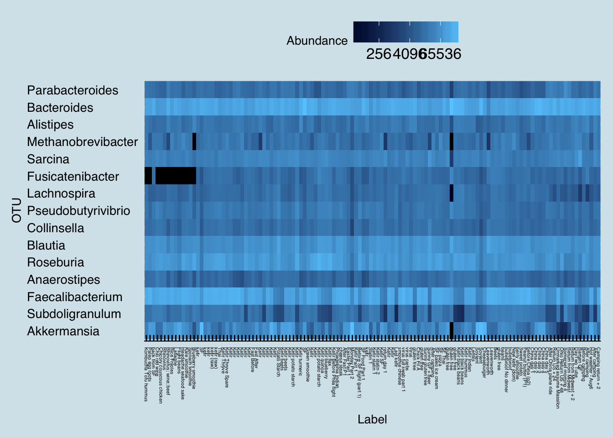
Note the sudden appearance of the genus Fusicatenibacter. You rarely see such a dramatic and consistent change as a result of an experiment, but unfortunately, little is known about this genus. A member of the Clostria class of phylum Firmicutes, an internet search reveals little of interest. But it definitely appears in my samples after drinking kefir.
In fact, look how the levels appear to coincide precisely with the periods when I drink kefir:
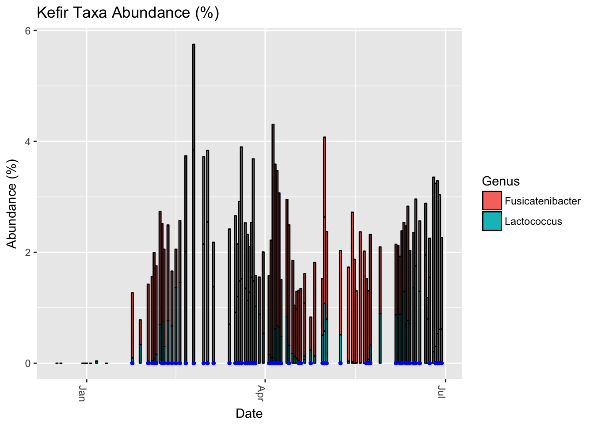
This is especially interesting because the only previous date when my gut saw any of this taxa was in December – on another occasion when I drank some kefir. In fact, Fusicatenibacter is such a strong predictor of kefir drinking that I can use it as a way to look back in time to see the samples when I drank some.
But other than this clear change in my gut microbiome, did I notice any differences in health?
Here the answer is more ambiguous. As a healthy adult, I don’t have any particular “problems” I’m trying to solve. I remained healthy during the period of the experiment, so the kefir certainly doesn’t appear to have made anything worse. My sleep hasn’t substantially changed either, and although I’m generally pretty even-tempered, I didn’t notice any particular changes positive or negative in my mood either.
The one area where, subjectively, where I feel different is in my overall sense of energy. Although I can’t put my finger on anything quantitative, I do notice that I seem to be a little more energetic on days when I drink kefir. Measuring that more precisely may be a good test for follow up.
3.3 Traveling through the jungle
We previously discussed the Lawrence David study that measured an individual microbiome daily for a year and found a dramatic change when one of the subjects moved temporarily to Thailand. I recently did something similar for a family vacation in Central America. Would the same changes happen to me?
We spent most of our time in a rural, jungle part of Belize, about a half hour’s drive from Benque, near the border with Guatemala. Besides viewing the fantastic, well-preserved Mayan ruins, we also did horseback riding, cave exploration, and of course plenty of eating.
Here’s a selfie I took in front of the incredibly well-preserved thousand-year-old pyramid at Tikal:

me at Tikal
I did one other thing: before leaving on the trip, and immediately afterwards, I took some gut microbiome samples. Here’s what my gut microbiome (phylum level) looked like before and after the trip:
Phylum | Before | After| ———————| ———— ———–| Firmicutes |71.836% |67.930% Bacteroidetes |16.424% |14.900% Actinobacteria |7.616% |0.771% Proteobacteria |0.982% |7.514% Verrucomicrobia |0.664% |0.013% Tenericutes |0.065% |0.071%
As we discussed in previous chapters, the phylum level is the “big picture”, and the first place to look at a new sample. In my case, the two biggest groupings didn’t change much: my ratio of Firmicutes to Bacteroidetes changed hardly at all, despite the different eating and living conditions. Apparently those two microbes quickly adjusted.
The most unusual change during my trip was the increase in Proteobacteria, from less than 1% to almost 8%. Even more interesting was that the Lawrence David study found the same thing: a westerner traveling to a developing country sees a sharp rise in Proteobacteria!
To see how or why this happened, I’ll review my samples at a lower taxonomic level. Here are the organisms found at the genus level:
| Genus | Before | After |
|---|---|---|
| Faecalibacterium | 14.198% | 20.374% |
| Bacteroides | 12.717% | 10.396% |
| Blautia | 4.469% | 8.585% |
| Ruminococcus | 8.383% | 7.906% |
| Pseudobutyrivibrio | 1.804% | 4.134% |
| Cronobacter | 0.002% | 3.592% |
| Coprococcus | 5.411% | 2.574% |
| Clostridium | 6.611% | 1.763% |
| Parabacteroides | 0.507% | 1.393% |
Most of the new organisms I picked up come from the family [Enterobacteriales], of which the majority – about 3.5% of my entire sample – is [Cronobacter], a nasty pathogen named after the [Greek mythological titan] who swallowed his children!
Ouch! Fortunately I never got sick. Why not? The science is just too new to say for sure, but here’s my theory: there is no such thing as “good” or “bad” bacteria. Everything depends on the ratios, on balance among lots of competing germs. In my case – and this is my pure, amateur, unscientific speculation – the Cronobacteria increase might actually have helped my health, by out-eating something else that may have been even worse.
Here are some reasons I suspect this is true:
Diversity: Oddly, my gut biome diversity went down slightly. Before the trip, uBiome found 19 unique phyla. Afterwards, there were only 15. You wouldn’t normally expect diversity to drop after exposure to novel microbes from the jungle. But I think there’s an easy explanation:
Increase in unidentified organisms: uBiome was able to identify only about 91% of what it found at the phyla level. In my previous tests, they found closer to 95+%. Maybe my apparent drop in diversity was simply a drop in identifiable bacteria. Maybe some of those unknown organisms stimulated the bloom in Cronobacter.
Clostridium plunge: I saw huge drops, from 0.66% to 0.18%, in the notorius Clostridumgenus, which includes many nasty species (e.g. the infamous antibiotic-resistant C. Difficile). Other pathogens dropped too. Did the change in location precipitate a fight between competing bacterial armies?
Parasites: the uBiome test only measures bacteria, so I don’t know the status of other microbes I encountered. If Cronobacteria are normally pathogenic, is it possible that all their toxicity was aimed at a takeover by some other organism?
The Lawrence David study also showed that the microbiome bounced back to normal again pretty quickly after the person returned back home. Is the same true for me? That’s something to watch for in my next samples.
3.4 Traveling in Mexico
Here’s another trip, this time to Mexico. Let’s start with the conclusions:
- My microbiome changed noticeably during my trip, but it bounced back in a few weeks.
- My diversity went up, as you’d expect, as did levels of one particular phylum, Proteobacteria that seems in me to indicate that my body is fighting invaders.
- Science still knows precious little about the microbiome, though we continue to learn.
People are not the only foreigners you meet when you visit another country. Trillions of new microbes, mostly bacteria, will meet you as soon as you cross the border, and many of them won’t get along with the trillions that already inhabit your body. Upon my arrival, I soon learned fortunately, that Mexican microbes are pretty friendly, and with all the tasty food down there, they’re lucky too.
“Montezuma’s revenge” is the popular name given to Traveler’s diarrhea, apparently because somebody got sick in Mexico long ago and decided to pin the blame on the Aztec emperor who was killed by the Conquistador Hernán Cortés in 1520. Whatever you call it, studies show up to 50% of international travelers suffer some trouble, and about 80% of the time the culprit is a bacterium.
Mexico City has become a serious foodie capital. If you haven’t been there recently, many seasoned travelers suggest you check it again because there has been quite a boom in fine restaurants with tasty dishes from around the world. We ate everything, from queso oaxaca at Mercado de San Juan, to the grasshopper-like insect delicacy ( 60 pesos/100g) chapulines, to the wonderful buttery-tasting fruit called cherimoya.
My favorite drink was pulque, a fermented concoction made from the sap of the maguey (agave) plant. Unlike other fermented beverages like kombucha or beer, the fermentation takes place inside the plant, before harvesting. The plants take more than a decade to mature, and when they start to produce, you have to suck out the pulque quickly or it goes bad. Nobody’s figured out how to preserve it without losing flavor and potency, so unfortunately I’m not able to get any in the U.S.

I loved the food, but what about my microbes? To find out, I tested myself with uBiome gut kits before leaving, immediately at the end of the trip (‘during’), and then a few weeks later. Here’s the highest level (phylum) summary of the most common bacteria I found:
| Before % | During % | After % | |
|---|---|---|---|
| Firmicutes | 74.45 | 67.38 | 71.21 |
| Bacteroidetes | 21.46 | 22.04 | 24.29 |
| Actinobacteria | 2.69 | 1.58 | 2.48 |
| Proteobacteria | 0.99 | 3.15 | 0.49 |
| Verrucomicrobia | 0.31 | 5.72 | 1.27 |
| Euryarchaeota | 0.19 | 0.52 | 1.05 |
The first thing to notice is the contrast between my microbiome during the trip versus otherwise. Before and after, my gut is normally dominated by the top two phyla, with nothing else breaking higher than 2%, but during the trip the abundances are more evenly spread. In other words, the diversity increased, as you can see in this picture of the changes in my “inverse simpson” diversity metric:
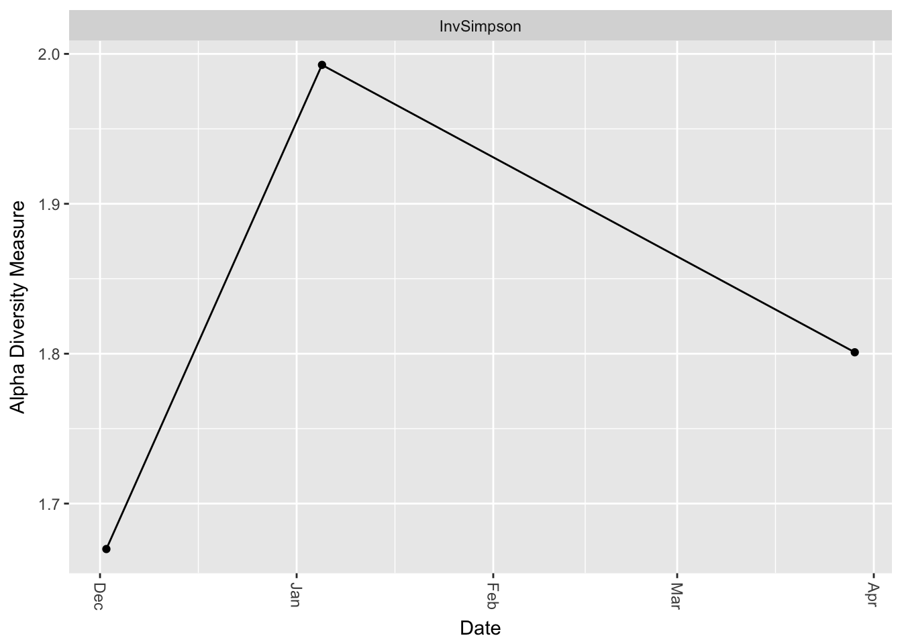
It makes sense that diversity would increase on a trip, but what can I learn about the bacteria that changed?
Notice how a key one, Proteobacteria, spiked during my trip and then returned to normal after I returned home. I saw the same spike after my jungle trip, during my gut cleanse experiment, and once before when I had been fighting an upset stomach. My experience is consistent with a similar observation by Duke University’s Lawrence David37 and collaborators, who found that this phylum seems to increase during episodes when the gut is under attack, like it is in foreign travel.
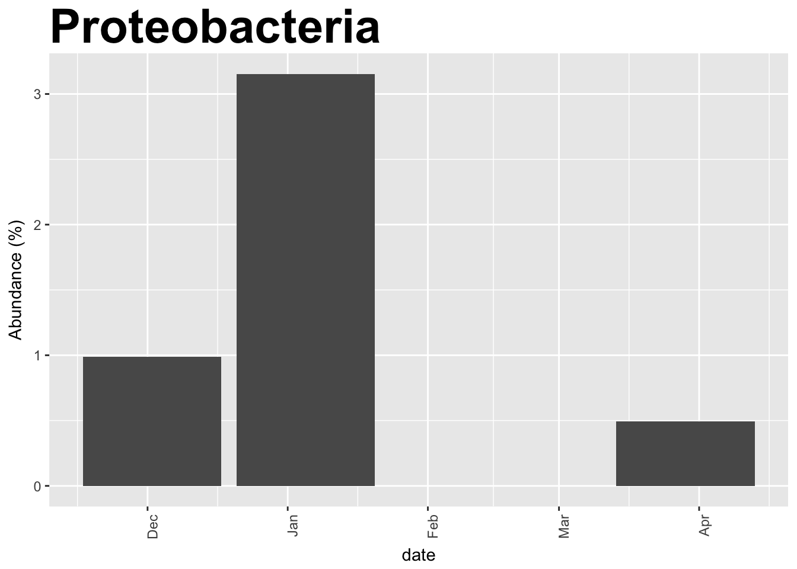
Whenever I see elevated Proteobacteria in somebody’s uBiome results, I always ask them if they’ve noticed anything unusual tummy-wise.
Because the uBiome technology is designed for citizen science and not medical purposes, the test won’t tell you if you have common pathogens, like the infamous E. Coli or other nasty ones like Shigella. If you ever suspect an illness, you should immediately see a doctor. We’re not just saying this. By their nature, pathogens are often very similar to benign or even beneficial bacteria, sometimes differing by only a single base pair. If they were too different, evolution would quickly stamp them out. The uBiome test just won’t give you the information you’d need for treatment.
That said, at the bacterial DNA level, the Kluyvera genus is quite similar to interesting bacteria like E. Coli or Shigella, and sure enough, I see that it spiked during my trip. Kluyvera ferments sugars and goes up in people on a ketogenic diet, but in this case I bet I’m seeing evidence of a perhaps some kind of an unwanted invader.
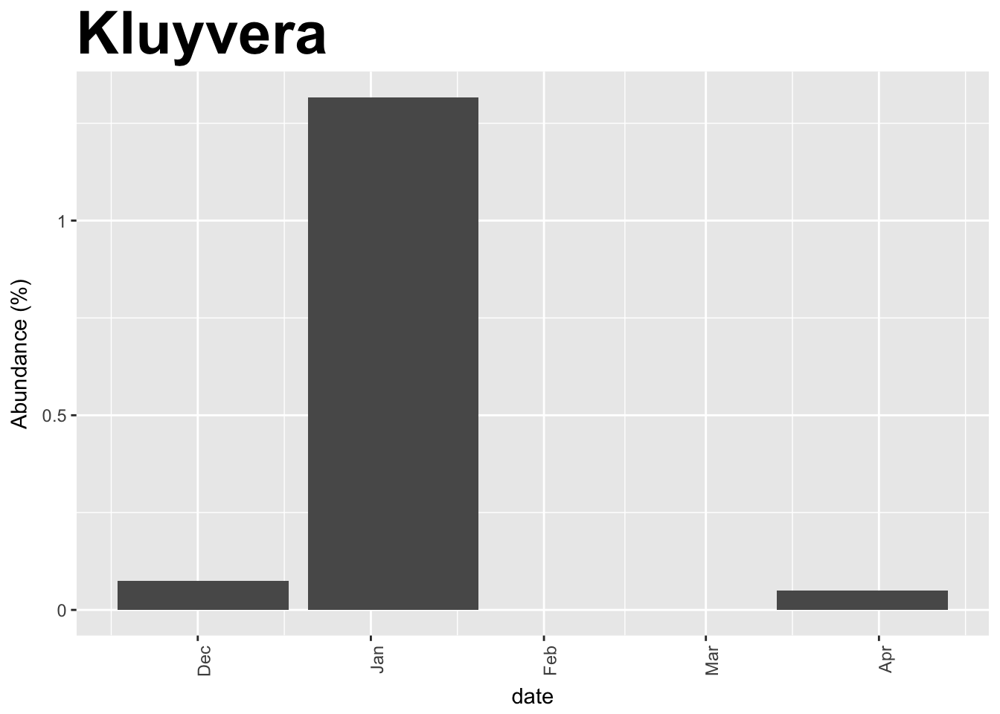
Next, what might I learn if I study just the bacteria that changed the most ? To do that, I made a list of just those at the genus level that existed before my trip and after, but not during.
New things I picked up:
Enterococcus
Citrobacter
Methanomassiliicoccus
Flavobacterium
Fastidiosipila
I then compared this to uBiome’s big database, based on tens of thousands of samples. You can find a chart like this on your Insights tab:

Two of these stand out for me: Methanomassiliicoccus and Citrobacter, both of which are rare among uBiome samples and yet they appeared for me just once on a trip to Mexico. Interesting…
I didn’t bother showing the whole uBiome chart, but a little further up the list of uBiome database frequency is Fastidiosipila, which again appeared just this once for me.
Next, let’s look at the organisms that disappeared while I was in Mexico:
Stuff I lost
Turicibacter sanguinis
Candidatus Soleaferrea
Pseudoflavonifractor
Candidatus Stoquefichus
Comparing these to the uBiome database, I see that all of them are pretty common, seen in at least a quarter of all other uBiome users. Again, it’s odd that they disappeared from my uBiome results during the trip.
One of them, Pseudoflavonifractor is associated with successful weight loss. I did gain a few pounds during the trip, but lost it all within a few weeks, maybe because this guy resurrected when I got home?
As for the rest, the obvious question– both for the bacteria that I gained and those I lost: is that good or bad?
The answer, frustratingly, is that we don’t really know, but here are some obvious questions for follow-up:
Are these bacteria somehow associated with Mexico? Like other organisms, some bacteria seem to be native to some geographies and some aren’t. Maybe I’ve stumbled upon a few that happen to enjoy the climate there.
I never became sick during my trip. Did some of these new bacteria protect me somehow? If so, what specifically might I do next time to ensure that I can get them again?
Few of the bacteria I gained seem to stick around, but I know from past experience living in another country that it does seem possible to make permanent changes. Many people who live for extended periods in Japan, for example, seem to carry a bacterium that’s good at digesting sushi. Maybe there’s a similar one for Mexican food?
What about the fermented pulque? Is there some specific health benefit I enjoyed by drinking something that thousands of years of tradition says is good for me? Perhaps with more data we can identify exactly which microbes thrive on this stuff.
As a citizen scientist, my purpose isn’t to solve these problems right away, but rather to raise new and hopefully interesting questions that others can follow up together. Studying the differences between my own samples is my biggest advantage over “real” scientists, who generally look at anonymous data and rarely have the context to go deep into interesting questions that might not have been apparent at the start of the experiment.
3.5 Camping
How does my microbiome change after camping?
Here are the genus-level organisms in my gut after camping that weren’t there before:
| After camping (%) | |
|---|---|
| Kluyvera | 3.66 |
| Methanobrevibacter | 3.60 |
| Subdoligranulum | 3.26 |
| Intestinibacter | 1.15 |
| Lactococcus | 0.89 |
| Butyricimonas | 0.62 |
| Erysipelatoclostridium | 0.58 |
Interesting to note the very large increase in the formerly-non-existent Kluyvera. This is a branch of microbes that includes E. Coli and the pathogen Shigella. Unfortunately, 16S doesn’t have enough resolution to distinguish between harmless and pathogenic versions of these taxa, but it is intriguing that they would show up.
Here are the ones I lost on the trip:
| Before Camping (%) | |
|---|---|
| Cloacibacillus | 1.15 |
| Anaerosporobacter | 1.09 |
| Marvinbryantia | 0.76 |
| Clostridium | 0.64 |
| Pyramidobacter | 0.48 |
| Bifidobacterium | 0.44 |
| Bilophila | 0.35 |
Odd that I lost all my remaining Bifidobacterium, though it’s important to note that the Before sample has a low read count (10275) compared to the “After” one (67794).
3.6 Do Probiotics Work?
Lots of people take probiotics, thinking that it’s helpful to ingest large amounts of bacteria. Most of the microbes are produced in a manufacturing facility that grows industrial quantities of a few species that have been found in various studies to be helpful for health. But how do you know if the specific one you take is any good for you?
To find out, I tracked my microbiome daily while taking a high quality probiotic according to the manufacturer’s instructions.
Here’s how I did the analysis.
I took a Sound Probiotics pill once per day for nine days, following the manufacturers directions. I would have continued for an even ten days, but I was starting to feel uncomfortably bloated those last few days. While that’s an encouraging sign that the pill is working, I didn’t want to do anything to seriously mess up my gut. This is just a fun experiment after all.

Let’s look for at the overall abundances for the two genera that were in the supplements: Bifidobacterium and Lactobacillus.

The blue line represents the days when I took a gut sample after consuming the probiotic. Unfortunately, despite taking and submitting samples daily, several of my results just didn’t have enough reads to be useful. This chart shows only the days when I have a sample of at least 10,000 reads.
Even with that caveat, it’s hard to see clear-cut evidence that the pill had a significant effect. Yes, I have slightly more of those two taxa by the end of the experiment, but seriously, not that much more.
Let’s look at a longer time horizon: 
Hmmmm, it seems the levels of those particular genera did increase a tiny bit at the end of the experiment, but there are plenty of other times on the chart where I see spikes too.
Maybe my view of the microbe ecology, hoping to see results in only one or two genera, is too simplistic. We know that the gut is an ecosystem. If you add lots of one type of organism, maybe that affects the abundances and ratios of other microbes, all of whom are in constant competition with one another. Is there a way to tell overall how the microbes are changing?
Let’s apply a Principal Coordinates Analysis analysis. Essentially these means we look at all the abundances together and work out which specific microbes seem to correlate most with the others in any given group of samples. In other words, if two different species tend to go up and down together all the time, i.e. are highly correlated, then let’s assume that they are essentially the same unit and combine them for the analysis. The microbes that don’t seem to correlate at all, should be kept distinct. We’ll combine all these different correlations over and over and pick just the two that seem to matter the absolute most, which we’ll plot on a 2-dimensional graph:
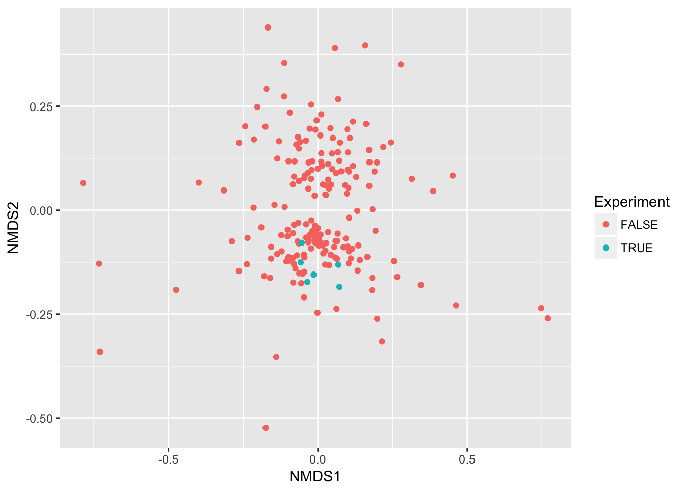
Hmm… that looks pretty random to me.
3.6.0.1 (Tentative) Conclusions and next steps
It is very difficult to say with this analysis that the probiotics had any effect that is detectable by the uBiome Explorer test.
Further analysis required:
Consider other statistical analysis. Although the two strains contained in the probiotic pill don’t appear to cause a change in the gut microbiome results, are there other changes that can be detected statistically. Perhaps there are other taxa that show a significant change.
Other time horizons. Maybe the changes don’t happen immediately. Although at a high level, there doesn’t appear to a noticable lag in the levels of the probiotic strains, perhaps a more sophisticated data transformation would uncover something.
3.7 Visiting the dentist
The gut biome is interesting enough, but bacteria colonize just about every part of the body, so here’s an experiment to measure the mouth bacteria and how the varieties shift after a visit to the dentist.
The mouth harbors its own unique ecology of bacteria, much of which is entirely unexplored. Scientists from the Forsyth Institute in Boston are at the cutting edge of the research, and have characterized many of the species found in their test subjects mouths, but widespread human trials are still years from producing the kinds of results we see from the gut biome research.
So far the research is clear that many cavities are associated with one nasty species: Streptococcus Mutans. This bug contains receptors that adhere to the surface of the tooth, creating a slimy biofilm where, under the right conditions they breed rapidly. Interestingly, just a few hundred bacterial cells is enough for it to begin its work, feeding on glucose to create a reaction that combines with the tooth enamel to form plaque. The ever-present lactic acid in the mouth, a critical component of pre-digestion, reacts with the plaque to remove calcium from the tooth, leaving small, ever deepening holes that will destroy the tooth unless the dentist intervenes with a filling.
I visit my dentist in April and October each year, and I measure my mouth biome before and after each April visit. Unfortunately I don’t have before/after for the October samples, but I do have a sample taken a few days afterwards. Let’s look at an overall heatmap picture of all the dentist-related mouth samples:
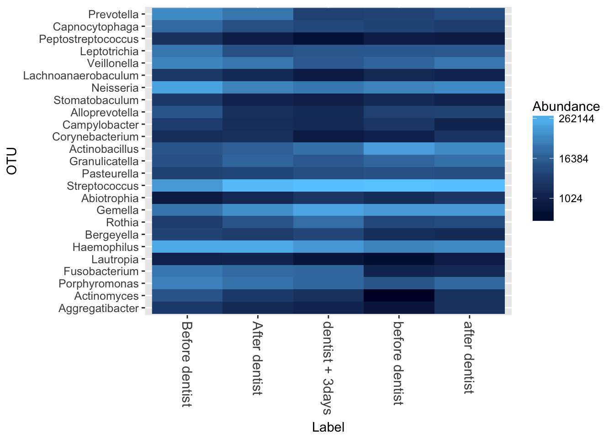
These are five samples taken over the course of one year, when many things can change. Nevertheless, the differences between the before/after samples is strikingly obvious. Despite being sampled only a day apart, there is clearly a major shift in the mouth microbiome after a dentist appointment and cleaning.
Here’s a more numerical breakdown at the genus level of the top ten microbes and their abundances before and after first visit:
| % before | % after | |
|---|---|---|
| Haemophilus | 22.3237 | 23.0557 |
| Neisseria | 17.9975 | 6.2514 |
| Streptococcus | 13.4156 | 36.0979 |
| Prevotella | 8.8309 | 3.9503 |
| Veillonella | 6.5300 | 4.3380 |
| Porphyromonas | 6.1201 | 3.6216 |
| Leptotrichia | 4.1791 | 0.9552 |
| Fusobacterium | 4.0991 | 2.5904 |
| Gemella | 3.8491 | 9.7999 |
| Capnocytophaga | 2.6722 | 0.8850 |
The most abundant taxa, Haemophilus, stays relatively stable, while abundances of the second two taxa Streptococcus and Neissaria seem to switch places. The other taxa in the top ten also seem to drop in abundance, except for Streptococcus and Gamella.
Anything in the genus Capnocytophaga is an opportunistic pathogen, so I say good riddance. Usually they’re fine, but if your immune system dips they can turn bad.
To understand more precisely what changed, let’s look more closely just at the ones that disappeared:
| % before | |
|---|---|
| Moryella | 0.1314 |
| Johnsonella | 0.1314 |
All of these unique microbes are of such tiny abundances that it’s hard to rule out simple contamination or other problems with the sampling. Still, it is interesting that there was nothing new (at the genus level) in the “after” sample that wasn’t in the “before”. This is consistent with the expectation that a dental cleaning would, if anything, tend to remove taxa rather than introduce any new ones.
But that was just for a single dental visit. What happened when I repeated the experiment the following year?
| % before | % after | |
|---|---|---|
| Streptococcus | 45.8502 | 43.1782 |
| Actinobacillus | 15.7059 | 8.5416 |
| Gemella | 13.3460 | 13.3400 |
| Haemophilus | 6.4258 | 8.7729 |
| Neisseria | 6.2026 | 8.4911 |
| Granulicatella | 2.3758 | 3.2374 |
| Veillonella | 2.2163 | 4.2491 |
| Leptotrichia | 1.3154 | 1.3874 |
| Porphyromonas | 1.2118 | 2.5798 |
| Pasteurella | 1.0204 | 0.8744 |
Interestingly, this time my most abundant taxa is Streptococcus, instead of Haemophilus.
Like last time and as expected, I found no new taxa after the cleaning, but here are the genus-level items that disappeared, all at such low abundances that we should probably chalk them up to contamination or other errors that creep in unavoidably between the time I take the sample and when they show up in my results.
| % before | |
|---|---|
| Peptostreptococcus | 0.0797 |
| Parvimonas | 0.0717 |
| Johnsonella | 0.0637 |
Let’s start with the genus level. How much Streptococcus has been in my mouth, and to the degree that we know at the species level, which types of species are there?
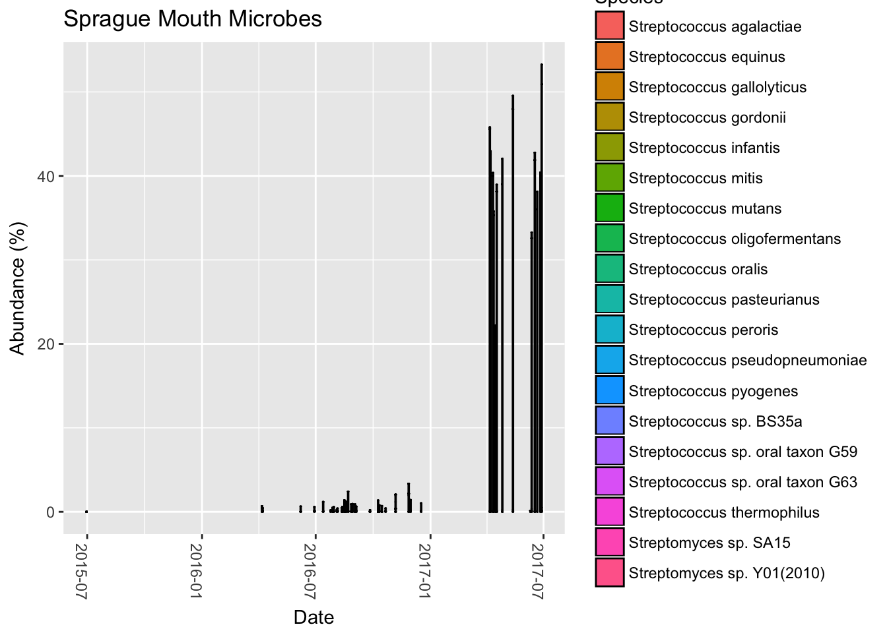
Hmm, lots of different species here. But what about the cavity-linked S. Mutans? It turns out that I do have a tiny bit, but in just one sample long ago. And sure enough, my dentist confirms that I have no cavities.
Keeping S. Mutans at bay is an important way that I’ll try to avoid cavities, so to continue the experiment, I’ll look at what I can do to manipulate the mouth biome, beyond what I eat and drink. A key part of that is how I brush my teeth.
Like most Americans, for years I brushed exclusively with one of the name brand toothpastes, usually Crest or Colgate. But looking more closely at the labels, I see two ingredients that will be of interest to my oral microbiome: triclosan and sodium lauryl sulfate, both of which are powerful anti-microbials. In addition, the fluoride in the paste works partly by making the tooth enamel more difficult for bacteria.
Pre-modern humans didn’t have toothpaste, and certainly not the antimicrobial kinds that have become popular only in the past generation. Of course, tooth decay was a painful reality for many of our ancestors as well, but there is good evidence that serious teeth problems didn’t begin until the widespread availability of sugar after the European immigration to America five hundred years ago. Skulls of humans before agriculture show almost no tooth decay. Wild animals, including primates like gorillas and chimpanzees get far fewer tooth problems than modern people, another clue that teeth brushing isn’t the whole story.
Could it be that a healthy mouth requires a healthy diversity of bacteria, including versions of Stroptococcus that out-compete the cavity-causing kinds? But toothpaste with triclosan and other anti-microbials are wide-spectrum: they don’t target just the “bad” cavity-causing organisms. They also kill other species needed for digestion, or to control bad breath.
To find out more about whether oral diversity is a good or bad thing, for my continuing mouth experiment I changed toothpaste. Rather than continue with one of the leading fluoride brands, I switched to a more “natural” brand whose ingredient list does not contain antimicrobials.
3.8 Experiment: Gut Cleanse
Microbiome experiments are complicated by the difficulty of holding everything constant. Even if you are careful with precise amounts of the same food and exercise, you are still dealing with your existing microbiome with all its uncertainties, making it difficult to tell precisely what caused a particular change. What if you could wipe the slate clean; start over with a completely new biome and just track that, along with precisely what you eat afterwards? What could you learn?
In this experiment, I tried exactly that, using a colon cleanse – the kind you do before a colonoscopy screening. By flushing all the bacteria from my system and carefully watching them grow back with side-by-side uBiome tests, I was able to get a better picture of the resilience of my microbiome.
The bottom line:
My gut microbiome recovers pretty quickly. Unlike antibiotics, which are known to cause long-term (and possibly permanent) changes, losing bacteria this way seems only to affect the total numbers, but they sprout right back just like a haircut. In two weeks I looked like nothing had happened.
Here’s the the summary from uBiome:
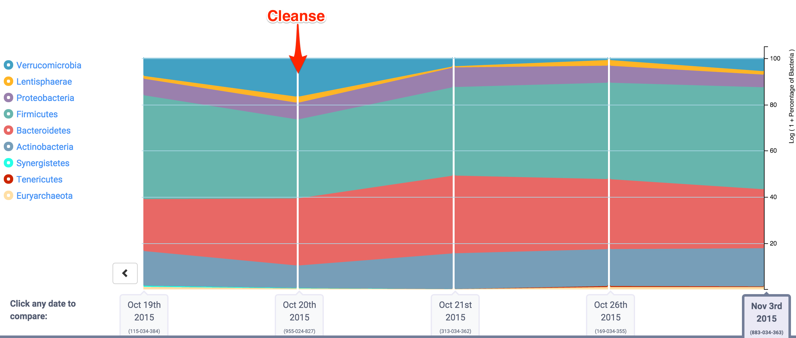
Notice the big change on the day of the cleanse, followed by a big shift back to normal just a day later.
Here’s the functional view of the same data:

Amounts and ratios changed, but not the specific organisms. Of course I lost a bunch of bacteria – that was the point – but surprisingly I didn’t seem to gain anything really new, even after an aggressive attempt at re-seeding. I didn’t gain or lose a single phyla. Other than amounts and ratios, I had to dig down to the Class level of the biological hierarchy to find anything that was permanently lost, and even at the very fine-grained Genus level, only two taxa that had been regularly present beforehand were now extinct. (Holdemania and Methanomassiliicoccus).
Here’s a look at the key Phylum measure we discussed previously that summarizes how my overall microbiome fared:
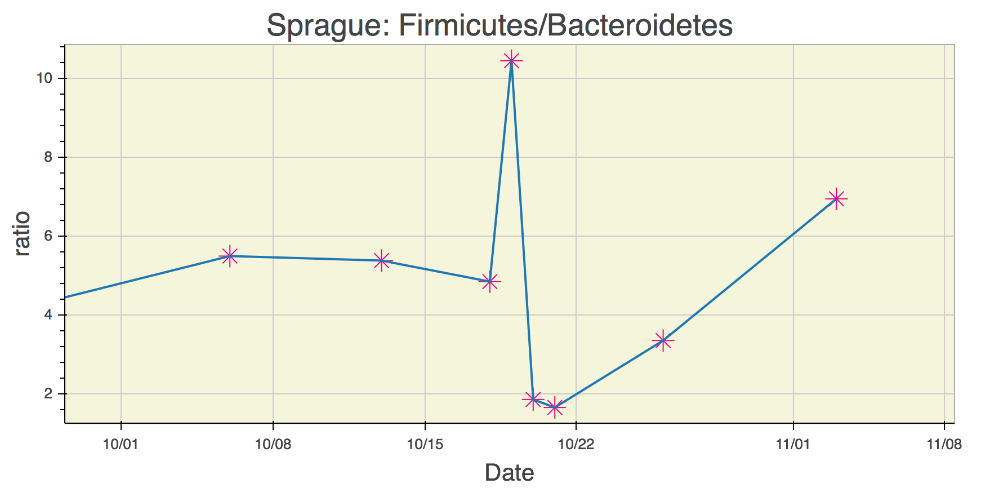
A couple of weird ones, at small amounts, made a brief appearance. I was especially intrigued by five new taxa that showed up just once, the day after the cleanse, and then disappeared. Maybe I found some that ordinarily get lost in the noise of the microbiome and only show up when the rest of the forest has been cleared. These are some hardy guys and I’m glad I know their names and can watch for them again: Abiotrophia, Bacillus, Catonella, Christensenella, Parvimonas.
It’s pretty hard to make a significant change. These days a little googling will find plenty of web sites, books, diets, and supplements that claim to “fix” or “change” your microbiome. I’m a healthy, reasonably fit adult, so I’m not as motivated as somebody with a specific health problem, but I thought simply popping probiotics and eating a variety of new and fermented foods would have a big effect. Nope. There are exceptions – my past experience with sleep hacking demonstrated conclusively to me that I can temporarily change my bifidobacterium levels for example – but those are harder to find than I had hoped.
Here’s another important ratio [discussed here] that microbiologists have found useful to see how the gut biome changes:
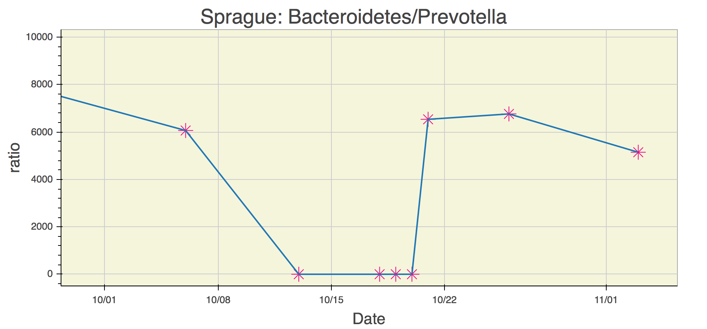
See much change? Me neither. There’s a short spike during the cleanse, but then it just pops back to normal.
Next, let’s look at the food I ate during the period:
Next: analyze the food to see if there is a relationship between various macronutrients and the levels of specific bacteria such as:
- Blautia (which likes sugar)
- Bacteroidetes (which likes carbs)
- Bifido (which likes fiber)
3.9 Kombucha
When you think of healthy bacteria-rich drinks that affect the microbiome, your first thought is probably kombucha. Served chilled during the summer, it has a well-deserved reputation as a natural refreshing alternative to soft drinks.
The microbes in kombucha are rather complex, including not just bacteria, but also yeast. In fact, the “scoby”" that people use to kick-start the fermentation stands for “Symbiotic Colony of Bacteria and Yeast”. The different microbes need one another to produce the distinctive sweet and fizzy taste. The yeast cells convert sucrose into fructose and glucose and produce ethanol; the bacteria convert glucose into gluconic acid and fructose into acetic acid; caffeine from the tea stimulates the entire reaction, especially the production of cellulose by special strains of bacteria.
The key bacterium in the scoby is genus Acetobacter, the same one that is key to the fermentation of vinegar. Unfortunately, Acetobacter is too similar to other genera for the uBiome test to distinguish it precisely, so instead I’ll look at a higher level, for presence of the order Rhodospirillales, of which Acetobacter is a type. Even though Rhodospirillales is a very broad category, the other genera in that order don’t appear much in humans anyway.
There have been many anecdotal claims of the effect of kombucha on health, purporting benefits ranging from better eyesight and thicker hair to cures for various diseases. Many of these have been studied experimentally, in mice as well as humans, often with compelling results, but I’m unable to find any good results showing the effect on the microbiome.
So I tested it myself.
3.9.1 Experiment
For seven days, from July 27 to August 2, 2016, I drank 48 ounces per day of commercially-purchased kombucha. I tested my gut microbiome with a uBiome Explorer kit each day, as well as my mouth and skin microbiome at intervals during the experiment.
The full dataset and analysis tools are on Github: https://github.com/richardsprague/kombucha

Diversity through time
3.9.2 Study the data in R
You can do some interesting statistical analysis on this data if you use the R programming environment. The sample script kombucha.R will pull all the data into an R environment and draw the following chart:

Bifidobacterium Levels
Here is a heatmap showing the changes of the top 20 genus during my experiment:
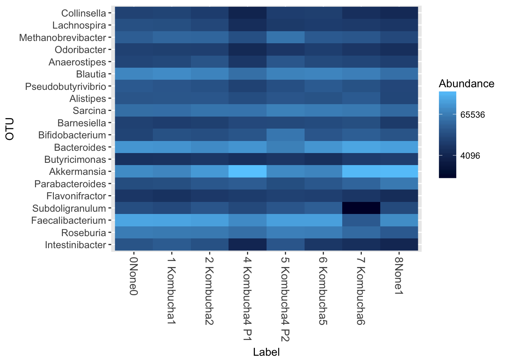
See any patterns? Unfortunately I don’t either.
My conclusion: kombucha doesn’t have much effect on my microbiome.
3.9.3 Going further
There is much more analysis that can be done with this data. Some of the ideas you might try are:
- Study correlations among the taxa. Which ones are correlated, and which are not?
- Which taxa appeared and/or disappeared during the experiment?
- Is there a relationship between the microbes known to be present in kombucha and those in any of the gut results?
- How do these results compare to you when you drink kombucha?
Please study as much as you like, and let me know what you find!
references: Read Dufresne and Farnworth (2000)
Follow @sprague3.10 Conclusions
Are these results are meaningful enough to be worthy of further analysis? How representative were these samples of my microbiome at the time? I submit only a tiny swab to uBiome’s lab; are the bacteria distributed evenly enough that the size or location of the sample doesn’t matter? Would I get similar results if I submitted two tests from slightly different sites on the same sample?
The answers to all these questions are unclear, but while we need to take these concerns seriously, my experience over many samples is that the uBiome results are consistent enough that, yes, the conclusions are actionable as long as we keep the limitations in mind. Here’s why I think so:
First, my results are consistent with other “healthy omnivore” submissions that uBiome has received from others with diets and health histories similar to mine. I would be concerned if, for example, my firmicutes/bacteroidetes ratio were reversed.
Second, 16S technology has proven accuracy when identifying unique organisms, so I can generally trust information about the overall level of diversity regardless of specific proportions. Since diversity tends to correlate with health – and is manipulable based on what I eat – my own experience shows that the changes I see in these results go up and down consistently in the expected way. Even if specific points on my microbiome map are fuzzy, the overall landmarks appear to be solid.
References
Zhernakova, A., A. Kurilshikov, M. J. Bonder, E. F. Tigchelaar, M. Schirmer, T. Vatanen, Z. Mujagic, et al. 2016. “Population-Based Metagenomics Analysis Reveals Markers for Gut Microbiome Composition and Diversity.” Science 352 (6285): 565–69. doi:10.1126/science.aad3369.
Dufresne, C, and E Farnworth. 2000. “Tea, Kombucha, and Health: A Review.” Food Research International 33 (6). Elsevier: 409–21.
Walsh et al. (2016). Also a 2-minute Youtube presentation↩
David et al. (2014) http://genomebiology.com/2014/15/7/R89↩